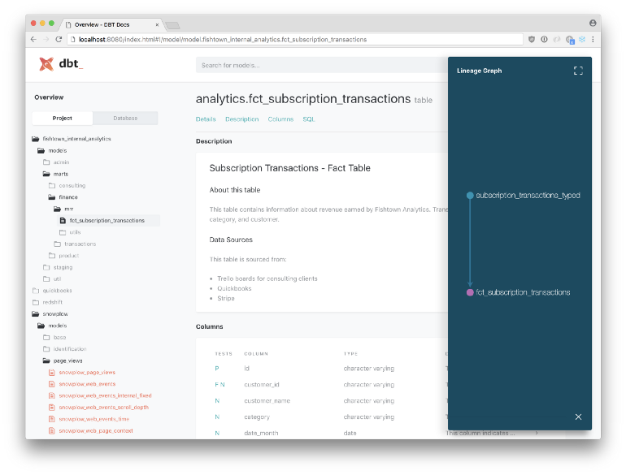
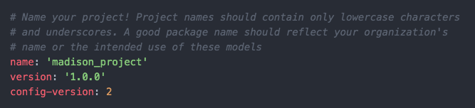
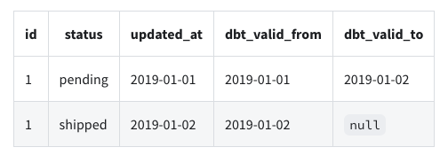

built for data modeling
**models** are like sql queries
modularizes SQL code and makes it reusable across "models"
.png)
* Running the orders "model" also runs the base\_orders model and base\_payments model (i.e. dependencies for orders)
* Not sure this exactly right. Seems like doing this would result in wasting time rerunning the same dependencies multiple times
* base\_orders and base\_payments are independent in that they can also be used in other models
* creates more dependable code because you’re using the same logic in all your models
* Makes runs faster since you aren’t wasting time and resources running the same blocks of code over and over again
You can schedule running sets of models by tagging them (e.g. #daily, #weekly)
Version Control
snapshots provide mechanism for versioning datasets
Within every yaml file is an option to include the version
package add-ons that allow you to interact with spark, snowflake, duckdb, redshift, etc.
Documentation for every step of the way
.yml files can be used to generate a website (localhost:8080) around all of your dbt documentation.
dbt docs generate
dbt docs serve
Current understanding
Data is brought in from warehouses via base models and basic transformations are performed (models >> staging directory)
Then the data is transformed to the desired state via intermediate models and calculations performed (models >> marts directory)
Then the final product is stored in the data directory
Optimizations
using an M1, the new Apple laptops with Apple’s own CPUs improved speed by 3x
upgrading from dbt 0.15.0 -> 0.20.0 resulted in another 3x speed increase
moving dbt out of a container resulted in a 2x speed increase for those using a Intel CPU MacBook Pro
Runs parallelized
Models that have dependencies aren’t run until their upstream models are completed but models that don’t depend on one another are run at the same time.
thread parameter in your dbt_project.yml specifies how many models are permitted to run in parallel
BigQuery
Components
Project Templates
[Style Guide](https://github.com/dbt-labs/corp/blob/master/dbt_style_guide.md)
More detailed: [link](https://discourse.getdbt.com/t/how-we-structure-our-dbt-projects/355)
Example - [Starter Project](https://github.com/dbt-labs/dbt-init/tree/master/starter-project)
.png)
*
profiles.yml
Not included in project directory
Only have to worry about this file if you set up dbt locally.
database connection, database credentials that dbt will use to connect to the data warehouse
If you work on multiple projects locally, the different project names (configured in the dbt_project.yml file) will allow you to set up various profiles for other projects.
… something about “targets” but not sure what this is or how it’s used
Fields where you need to change default values to your project name:
project name, profile name
variables
Defined in the project yaml and used in models
Accessed using var
Example: Assigning States to Regions
Define variables in dbt_project.yml
vars:
state_lookup:
Northeast:
- CT
- ME
Midwest:
- IL
- IN
Using the variables in a model
{# Option 1 #}
SELECT state,
CASE {% for k, v in var("state_lookup").items() %}
WHEN state in ({% for t in v %}'{{ t }}'{% if not loop.last %}, {% endif %}{% endfor %}) THEN {{ k }}{% endfor %}
ELSE NULL END AS region
FROM {{ ref('my_table') }}
{# Option 2 #}
SELECT state,
CASE {% for k, v in var("state_lookup").items() %}
WHEN state in ({{ t|csl }}) THEN {{ k }}{% endfor %}
ELSE NULL END AS region
FROM {{ ref('my_table') }}
This is a complicated example, see docs for something simpler
{% ... %} are used to encapsulate for-loops and if-then conditions, see docs
{# ... #} is for comments
Option 2 uses a csl filter (comma-separated-list)
models section
my_new_project
models Misc * key components of a well-written data model * modularity where possible * Same as the functional mindset: “if there’s any code that’s continually repeated, then it should be a function(i.e. its own separate model in dbt).” * readability * Comment * Use CTEs instead of subqueries * Use descriptive names * Example: if you are joining the tables “users” and “addresses” in a CTE, you would want to name it “users_joined_addresses” instead of “user_addresses” * Example: Comments, CTE, Descriptive Naming
WITH
Active_users AS (
SELECT
Name AS user_name,
Email AS user_email,
Phone AS user_phone,
Subscription_id
FROM users
--- status of 1 means a subscription is active
WHERE subscription_status = 1
),
Active_users_joined_subscriptions AS (
SELECT
Active_users.user_name,
active_users.user_email,
Subscriptions.subscription_id,
subscriptions.start_date ,
subscriptions.subscription_length
FROM active_users
LEFT JOIN subscriptions
ON active_users.subscription_id = subscriptions.subscription_id
)
SELECT * FROM Active_users_joined_subscriptions
Model categories: staging, marts, base/intermediate
* Staging
* Contains all the individual components of your project that the other layers will use in order to craft more complex data models.
* Each model bears a one-to-one relationship with the source data table it represents (i.e. 1 staging model per source)
* Typical Transformations: recasting, column renaming, basic computations (such as KBs to MBs or GBs), categorization (e.g. using CASE WHEN statements).
* Aggregations and joins should also be avoided
* Usually materialized as views.
* Allows any intermediate or mart models referencing the staging layer to get access to fresh data and at the same time it saves us space and reduces costs.
* Example
* Both the Stripe and Braintree payments are recast into a consistent shape, with consistent column names.
* Marts
* Where everything comes together in a way that business-defined entities and processes are constructed and made readily available to end users via dashboards or applications.
* Since this layer contains models that are being accessed by end users it means that performance matters. Therefore, it makes sense to materialize them as tables.
* If a table takes too much time to be created (or perhaps it costs too much), then you may also need to consider configuring it as an incremental model.
* A mart model should be relatively simple and therefore, too many joins should be avoided
* Example
* A monthly recurring revenue (MRR) model that classifies revenue per customer per month as new revenue, upgrades, downgrades, and churn, to understand how a business is performing over time.
* It may be useful to note whether the revenue was collected via Stripe or Braintree, but they are not fundamentally separate models.
Base/Intermediate
Base
basic transformations (e.g. cleaning up the names of the columns, casting to different data types)
Other models use these models as data sources
prevents errors like accidentally casting your dates to two different types of timestamps, or giving the same column two different names.
two different timestamp castings can cause all of the dates to be improperly joined downstream, turning the model into a huge disaster
Usually occuring in staging
read directly from a source, which is typically a schema in your data warehouse
Source object
`{{ source('campaigns', 'channel'){style='color: goldenrod'}[}}]{style='color: goldenrod'}`
* campaigns is the name of the source in the .yml file
* channel is the name of a table from that source
Intermediate
Brings together the atomic building blocks that reside on staging layer such that more complex and meaningful models are constructed
Usually occuring in marts
Additional transformations that particular marts-models require
* Created to isolate complex operations
Typically used for joins between multiple base models
* Should not be directly exposed to end users via dashboards or applications
* Other models should reference them as Common Table Expressions although there may be cases where it makes sense to materialize them as Views
* Macros called via `run-operation` cannot reference ephemeral objects such as CTEs
* Recommended to start with ephemeral objects unless this doesn’t work for the specific use case
* Whenever you decide to materialize them as Views, it may be easier to to do so in a [custom schema](https://docs.getdbt.com/docs/build/custom-schemas), that is a schema outside of the main schema defined in your dbt profile.
* If the same intermediate model is referenced by more than one model then it means your design has probably gone wrong.
* Usually indicates that you should consider turning your intermediate model into a macro.
reference the base models rather than from a source
* Reference object
* `{{ ref('base_campaign_types'){style='color: goldenrod'}[}}]{style='color: goldenrod'}`
* base\_campaign\_types is a base model
Tagging
Allows you to run groups of models
Example dbt run --models tag:daily
Directories models Sources (i.e. data sources) are defined in src_ .yml files in your models directory * .yml files contain definitions and tests * .doc files contain source documentation * Models (i.e. sql queries) are defined stg__yml * .yml files contain definitions and tests * .doc files contain source documentation * The actual models are the .sql files Example * staging: * Different data sources will have separate folders underneath staging (e.g. stripe). * marts: * Use cases or departments have different folders underneath marts (e.g. core or marketing) data contains all manual data that will be loaded to the database by dbt.
To load the .csv files in this folder to the database, you will have to run the `dbt seed` command.
For github or other repos, do not put large files or files with sensitive information here
acceptable use cases: yearly budget, status mappings, category mappings, etc
snapshots
captures of the state of a table at a particular time
build a slowly changing dimension (SCD) table for sources that do not support change data capture (CDC)
Example
Every time the status of an order change, your system overrides it with the new information. In this case, there we cannot know what historical statuses that an order had.
Daily snapshots of this table builds a history and allows you to track order statuses
Macros
similar to functions in excel
define custom functions in the macros folder or override default macros and macros from a package
See bkmks for tutorials on writing custom macros with jinja
Every file in the unit_testing/revenue folder will be loaded into unit_testing
Executing dbt build -s +tag:unit_testing will run all the seeds/models/tests/snapshots with tag unit_testing and their upstreams
Create macro that switches the source data in the model being tested from production data (i.e. using {{ source() }} ) to mock data (i.e. using ref ) when a unit test is being run
2 inputs: “source_table” (production data) and “test_table” (mock data)
macro returns the appropriate table based on the variable in the dbt command
If the command doesn’t provide unit_testing variable or the value is false , then it returns source_table , otherwise it returns test_table.
Add macro code chunk to model
{{ config
(
materialized='table',
tags=['revenue']
)
}}
{% set import_transaction = select_table(source('user_xiaoxu','transaction'), ref('revenue_transaction')) %}
{% set import_vat = select_table(source('user_xiaoxu','vat'), ref('revenue_vat')) %}
SELECT
date
, city_name
, SUM(amount_net_booking) AS amount_net_booking
, SUM(amount_net_booking * (1 - 1/(1 + vat_rate))) AS amount_vat
FROM {{ import_transaction }}
LEFT JOIN {{ import_vat }} USING (city_name)
GROUP BY 1,2
Inside the {%...%} , the macro “select_table” is called to set the local variables, “import_transaction” and “import_vat” which are later used in the model query
Model file is named “revenue2.sql”
Run model and test using mock data: dbt build -s +tag:unit_testing --vars 'unit_testing: true'
Run model with production data (aka source data): dbt build -s +tag:revenue --exclude tag:unit_testing
model properties file that’s named “revenue.yml” in the models directory
By including tags: ['unit_testing'] we can insure that we don’t run this test in production (see build code above with --exclude tag:unit_testing
Macro for comparing numeric output
{% test advanced_equality(model, compare_model, round_columns=None) %}
{% set compare_columns = adapter.get_columns_in_relation(model) | map(attribute='quoted') %}
{% set compare_cols_csv = compare_columns | join(', ') %}
{% if round_columns %}
{% set round_columns_enriched = [] %}
{% for col in round_columns %}
{% do round_columns_enriched.append('round('+col+')') %}
{% endfor %}
{% set selected_columns = '* except(' + round_columns|join(', ') + "), " + round_columns_enriched|join(', ') %}
{% else %}
{% set round_columns_csv = None %}
{% set selected_columns = '*' %}
{% endif %}
with a as (
select {{compare_cols_csv}} from {{ model }}
),
b as (
select {{compare_cols_csv}} from {{ compare_model }}
),
a_minus_b as (
select {{ selected_columns }} from a
{{ dbt_utils.except() }}
select {{ selected_columns }} from b
),
b_minus_a as (
select {{ selected_columns }} from b
{{ dbt_utils.except() }}
select {{ selected_columns }} from a
),
unioned as (
select 'in_actual_not_in_expected' as which_diff, a_minus_b.* from a_minus_b
union all
select 'in_expected_not_in_actual' as which_diff, b_minus_a.* from b_minus_a
)
select * from unioned
{% endtest %}
.png) * staging: * Different data sources will have separate folders underneath staging (e.g. stripe). * marts: * Use cases or departments have different folders underneath marts (e.g. core or marketing) data contains all manual data that will be loaded to the database by dbt.
* staging: * Different data sources will have separate folders underneath staging (e.g. stripe). * marts: * Use cases or departments have different folders underneath marts (e.g. core or marketing) data contains all manual data that will be loaded to the database by dbt.